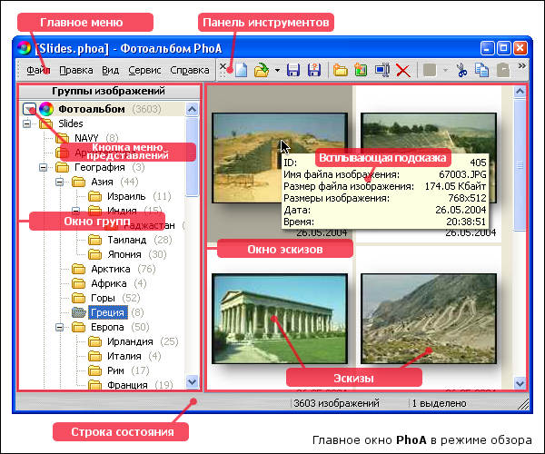

Как уже было сказано, режим обзора предназначен для создания фотоальбома. Этот режим является стартовым для программы — запускается PhoA именно в этом режиме.
Главное окно программы построено по принципу стандартного Проводника Windows: в левой части расположено дерево групп-папок, а в правой отображаются эскизы и описания изображений, находящихся в выбранной слева группе.
Слева у корневого узла дерева — узла фотоальбома расположена кнопка-меню, содержащая команды работы с представлениями фотоальбома и переключения отображения между представлениями и группами фотоальбома.
Вы также можете отображать это меню нажатием клавиши Пробел, когда корневой узел выделен.
{[%hh_seealso_ru]}
Описание команд меню
Работа в режиме обзора
Работа с представлениями
{[%hh_ftr_ru]}